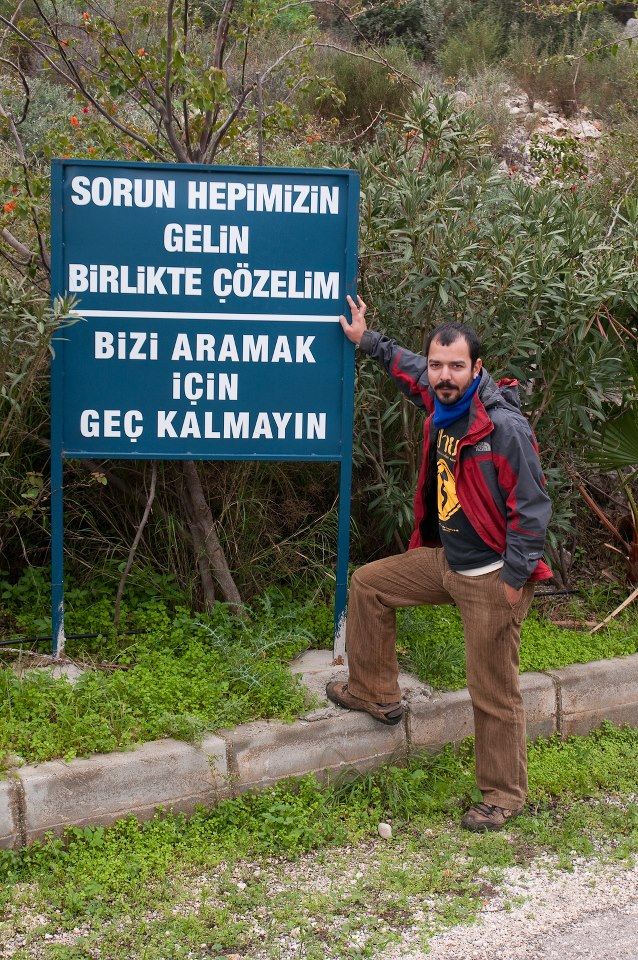

Bir Spor Dalı Olarak Post Travmatik Stres
Sevgili Prenses,
Kızgın kumlardan serin sulara sekerek geçirdiğim son bir yılın ardından seni ne kadar ihmal ettiğimi fark edip yolculuğuma seni de dahil etmek boynumun borcu oldu. Hindistan-Uganda-Türkiye-İngiltere hattından sıyrılıp soluğu Güney Sudan’da almadan önce tebdil-i mekanın ruhun gıdası mı yoksa çilesi mi olduğu sorusuna cevaplar aramak isterim izninle.
Eyleyen insanın bir rahatsızlığı olduğu kanaatindeyim bu aralar. Yazan, çizen, gezen, konuşan insanların doğru ifade aracını bulunca kusarcasına varoluşsal kaoslarını dışa vurduklarını sezinliyorum. Travmalarıma kılıf mi dikiyorum acep yine? Yokluğumda Justin Bieber hayranı bir 16’lık prensese dönüşme ihtimalini yadsımayarak; düşük dikkat sürende seni şaşırtıp, güldürüp eğlendirerek mesajımı vermeye odaklanma ihtiyacı hissettim bak bi anda. Yediğin hamburgerin içine sakladığım çiviler derinlerde bir yere batar da belki birazcık sesin çıkar be prenses.
Şimdi özünde yaptığım şey, dünyanın hayatta kalması zor, draması bol mekanlarına kendimi yerleştirip mekanın ve şartların keskin değişiminden sonra ben dediğim çorbanın dadının değişip değişmediğini anlamak. Tuna çorbasının içine biraz köri ekleyince nooldu Hindistan’da mesela? Sınır tanımayan doktorlarla yürüttüğüm profesyonel çalışma temposu Bihar’da gıdasızlıktan zayıflayıp ölme noktasına gelen beş yaş altı çocukların küçük bir bölümünün hayatını kurtarmaya odaklıydı geçtiğimiz aralık ayı başına kadar. Dünyayı kurtarıp kahraman mı olduk? Hayır. Yılda 3 hasat yapan, topraktan bereket fışkıran bir yerde insan evladının açlıktan ölmesini anlamak için bir süre sakince izlemek gerekiyor. Tıbbi önlemlerle sorunun çözülemeyeceğini anlamak ise sadece birazcık gözlem gerektiriyor. Topraksız köylüler, kast sisteminin pazar ekonomisine uyum sağlamış modelinde karın tokluğuna tarlada çalışırken; doğurduğu 10 çocuktan sadece bir kaçının sert koşullarda hayatta kalabileceğini bilerek yaşayan bir topluluğun içinde tıbbi tedavi çalışmaları yürütmek oldukça naif kaçıyor tabii ki. Ama yine de bütün politik, geniş spektrumlu bakışın ötesinde, hayatını kurtarabildiğimiz her çocuk için özünde bir fark yarattığımızı da kabul etmek gerekiyor. Patronlarımızı zengin ederek karnımızı doyurmaya çalıştığımız işlerin yanında yine de bu iş benim için tatmin edici bir yaşamı sürdürme unsuru.
Çevre mühendisliği diplomasını aldığımdan beri mesleğimi soranlara “çok boktan bir mesleğim var” cevabını veriyorum. İnsanlar mecazi bir ifade kullandığımı farzedip işimi sevmediğimi düşünüyorlar. Aslen yürüttüğüm çalışmaların büyük bir bölümü, hepimizin bluk bluk diye içimizden günlük olarak dışarıya saldığımız ama lafını hiç etmediğimiz parçacıkların birilerinin ağzının içinde biterek onları hasta etmesini önlemeye yönelik. Mikrobiyolojiye meraklı Meren gibi bir babayiğidin, görev bilinciyle, hepimizin nasıl birbirimizin bokunu sürekli yemekte olduğumuzu yorumlar bölümüne yazmasını umarak kısa kesiyorum.
Benim okulda hiçbir derste öğrenmediğim daha temel sorunlarım var. Hayatında hiç tuvalet görmemiş bir insanı açık havanın bütün ferahından kopartıp dört duvar arasında ıkınmaya ikna etmenin yolu nedir? Bilen beri gelsin, zira ben Bihar’daki bir yılın ardından batı tarzı hijyen obsesyonunu gidip oralarda dayatmanın pek de mübah olmayabileceğini düşünmeye başladım. Aşırı empati devreleri mi yaktı acaba? Bir sürü sosyal psikoloji deneyi de gösteriyor ki 9 tane yalancıya yoğurt siyah dedirtirseniz onuncu denek de siyah deme eğilimi gösteriyor. Ya da onuncu denek kendi gerçekliğine çok sıkı bir şekilde tutunan esnemez bir şahsiyetse muhtemelen deliriyor.
Akıl sağlığı denen normun, hepimizi standart üretken ve tüketken, uyumlu, öngörülebilir, kontrol edilebilir prototipler olarak özetlemek için uydurulan bir psikoloji mühendisliği terimi olduğuna yemin edebilirdim eskiden. Şimdilerde gerçeklik denen kavramın, şahit olduğumuz dünyayı bizimle beraber algılayan bireylerle sürekli bir senkronizasyon ve onama çabası olduğu fikrine doğru evriliyorum. Ama konunun analizini büdütörümüz nazımın analitik akademik ellerine bırakmakta huzur bularak sözlerime sonraki paragrafta devam ediyorum.
Şimdi tabi son birkaç yazıyı; hintlilerin ne kadar manyak insanlar olduğunu anlatarak geçirdim, öyle güldünüz, şaşırdınız halinize şükrettiniz vs. Biraz da geri dönüş travmasından bahsetmek isterim. Zira döndükten sonra siz bu yazıyı okuma ayrıcalığına sahip (bilgisayarı, elektriği, ekmeği, suyu, parası olan) insanlara manyak gözüyle bakarak kış aylarını memlekette geçirdim. Her ne kadar çalıştığım STK sahadan dönüşte elimize 24 saat arayabileceğimiz bir psikolojik danışma hattının telefon numarasını tutuştursa da “ben deli değilim” önermesini kendime haklı çıkarmak için zihnim çeşitli analitik labirentlerde değişik değişik sonuçlara vardı. Bu aşamada ben kendimi yurdumuzun sayılı kurtarılmış bölgelerinden olan Kaş beldesine atıp denize bakarak yavaşlama çabalarına çoktan başlamıştım. Herhangi bir deliye devlet memuru normalliğiyle yaklaşabilen cool yazarımız Burcu‘nun esirgeyici huzuruna çıkabilmek durumu biraz daha kolaylaştırdı. Yine de hızımı alamayıp Kaş ilçemizin arazi simsarlarlarından birine dönüşme yolundan, felsefe doktorasından daralan Nazım’ın KaÅŸ’ta portakal suyu satma hayallerine yürekten ortaklık sözü vermeye, KaÅŸ’ı ekolojik sürdürülebir bir turizm destinasyonu olarak pazarlama planlarıyla belediye başkanlığına aday olmaya kadar engin bir hayal gücüyle sağdan sola sektiğim aylardan sonra “nooluyo lan” diyebileceğim bir noktaya geldim. O aralar prensese yazsaydım hepiniz çok eğlenirdiniz herhalde.
Ardından travmaya doymayan bünye, kendini Suriye sınırına mültecilere yardım dağıtımı için fırlatınca çivi çiviyi söker atasözü bedenimde suret buldu. Şimdiye kadar çalıştığım yerler hep kanıksanmış kronik yoksulluk bölgeleriydi. Savaş bambaşka birşeymiş onu gördüm. Birgün tepenize bombalar yağmaya başlayıp bütün ailenizle soluğu sınırın ötesinde alırsanız, meselenin her türlü politik analizin ötesinde olduğunu anlıyorsunuz. Sıfır derecede sobasız derme çatma bir odada, ailesine bakamayan bir babanın yüzündeki çaresizliğe hergün onlarca kez şahit olmak beni başka birisi yaptı. Ama bunu nasıl ifade edebileceğim konusunda hiçbir fikrim yok. Yazının başında doğru ifade aracı derken bahsettiğim biraz da buydu. Bu konudan bahsedebilmek, hint köylülerine neden tuvalet kullanmaları gerektiğini anlatmaktan bile daha zor. Velhasıl kelam bana kalan ders, empati denen insanı duygunun etraf travmatize olmuş mültecilerle çevriliyken çok da bünyeye faydalı bir mefhum olmadığı yönünde. Böyle durumlarda kendimi korumayı öğrenmek de zaman içinde edinilen bir yeti olsa gerek. Kendimi paralaya paralaya öğreneceğimdir inşallah.
Sınır tanımayan doktorlar tedavi hizmetlerine odaklansa da önleyici halk sağlığı hizmetlerinin önemini çok erken farketmiş. İnsanlara temiz su sağlamak, milyonlarca dolar harcayarak verebileceğiniz tedavi hizmetinden çok daha önemli. Bu yüzden de beni İngiltere’nin nezih üniversitelerinin birinde su, sağlık ve hijyen konulu iki haftalık bir eğitime gönderdiler. Allah sizi inandırsın, iki hafta boyunca akademik düzeyde “bok”tan bahsettik. Ki, bunun İngiltere’nin sosyal ve çevresel anlamda steril ortamında yapıyor olmanın çelişkisine hiç girmiyorum. Su kuyusu açmaktan basit arıtma yöntemlerine, kolera kamplarından kuru tuvaletlere kadar konu konuyu açtı.
Dönüşte sefer emri gecikmedi. Siz bu satırları okurken ben Güney Sudan çöllerinde göçebe çoban kabilelerle çiftçi yerleşiklerin, araplarla afrikalıların, hristiyanlarla müslümaların çeşitli kılıflar altında ama aslen kıt kaynaklar için birbiriyle çatıştığı bir mecraya damardan giriş yapıyor olacağım. Eskiden birbirileyle ancak sopayla kavga eden bu grupların iç savaş sonrası ülkede biriken milyonlarca kalaşnikofun kolay gücüne sığınmamaları da şaşırtıcı olurdu tabi. Böyle kaotik bir değirmenin suyunu da petrol kuyularıyla döndürünce gelsin açlık, gelsin kıtlık, gelsin felaket. Yine işte gidip oradan bi kendime bakacağım ağzım yüzüm kayıyor mu, insan evladı nelere alışabiliyor diye. Uydu telefonu dışında dünyayla pek bağlantım olmasa da Uludere kırsalından telefonda prensese mektup yazabilen bu ekip yine sesimi sana duyurmanın bir yolunu bulacaktır diye ummaktayım prenses. O zamana kadar kal sağlıcakla.


{kind=link}
{kind=link}
{kind=link}
{kind=link}
Deneyimlerini bizle paylaştığın için teşekkürler Tuna. Ruhuna sağlık
Yazilarini cok severek okuyorum. Buldugun her firsatta yaz emi 😉
Gercekten okudugumu! hissettigim bir paylasim.tesekkurler
Yorumlariniz icin cok tesekkurler. Suriye’deki durumu bir psikologun agzindan anlatan bir yaziyi ingilizce olsa da paylasmak istedim. http://www.msf.org/article/syria-%E2%80%9Cflashbacks-nightmares-and-baby-clothes%E2%80%9D
ne gadden çok acaip işler yaptığını öve öve bitirememek???